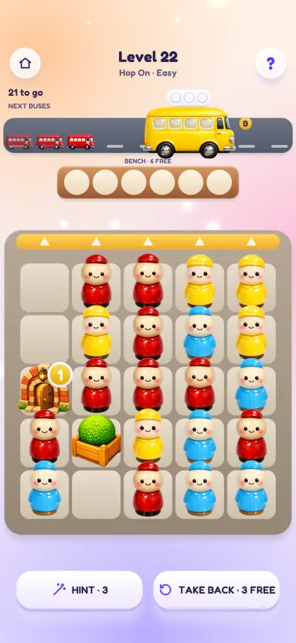

Hop On: the bus jam puzzle
By the Sultan of Niyyat team, who make Puzzle Jar. Last updated .
Hop On is the bus jam puzzle in Puzzle Jar. Painted passengers crowd a town square, and buses pull up one at a time along the top. Tap a passenger who has a clear way out: they walk to the stop and board if the bus is their color, or sit on the waiting bench if not. Get everyone on a bus to win. There is no clock and no move limit; you only get stuck when the bench is full and nobody can board.

On this page: 13 questions
- How do you play Hop On?
- Why won't a passenger move when I tap them?
- What happens when the Hop On bench is full?
- What are hidden passengers in Hop On?
- What are the brick doorways for?
- What are frozen passengers?
- What changes with two bus stops and big buses?
- What is the best strategy for Hop On?
- How do you win a level of Hop On?
- What does the Hop On hint show?
- What does the rescue do in Hop On?
- How hard does Hop On get?
- Is Hop On a bus jam game without a timer?
How do you play Hop On?#
Tap a passenger. If an open path leads from them to the stop, they hop out of the crowd. A passenger whose color matches the bus at the stop takes a seat; anyone else waits on the bench. A bus with all seats filled drives off, the next one pulls in, and any bench passengers of its color hop straight on.
Why won't a passenger move when I tap them?#
They are boxed in. A passenger can only leave if there is a free way through the crowd to the stop; other passengers and planters block it. The passenger shakes and the game tells you why. Clear the people between them and the stop first.
What happens when the Hop On bench is full?#
You can still tap anyone whose color matches the bus at the stop. But once the bench is full and no one who can walk out matches the bus, the level is stuck: the crowd shakes and the bench flashes red. The bench has 4 to 7 seats, shown at the top as free seats.
What are hidden passengers in Hop On?#
Passengers whose color you cannot see yet. They appear from Hop On level 8. A hidden passenger shows their color as soon as they have a free way to the stop, and it stays shown after that. Until then, plan around them: you know they are one of the colors still in the bus line.
What are the brick doorways for?#
A doorway holds a line of passengers who step out one by one. The number on the doorway shows how many are still inside. Each time the square in front of it empties, the next one steps out. Doorways start at level 20 and are easy to forget, so count their passengers when you plan the bench.
What are frozen passengers?#
Passengers who cannot move until a certain number of other passengers have left the square. They arrive at level 35. They thaw by themselves as the crowd thins, so you never need to free them directly, but they can block a path for a while.
What changes with two bus stops and big buses?#
From level 50 some squares have two stops, so two buses wait at once and you have two colors to fill. From level 65 big buses arrive with six seats instead of three. Both give you more choice, and more ways to clog the bench if you send people out in the wrong order.
What is the best strategy for Hop On?#
Read the bus line before you tap. The next buses are always shown, so look for passengers of those colors who can already walk out, and leave the others in the crowd. A passenger standing in the square costs nothing; one on the bench takes a seat you may need later. Use the bench to unblock a path, not as a waiting room.
How do you win a level of Hop On?#
Get every passenger onto a bus. Each color has exactly enough passengers to fill its buses, so no seat is ever left over or short. The counter in the top corner shows how many passengers are still to go.
What does the Hop On hint show?#
The next tap in a winning order the solver found with the bench as it is now. The game keeps that whole order, so if you follow the hints from there, each one leads to the next and none of them traps you.
What does the rescue do in Hop On?#
It adds two seats to the bench and lets one passenger of your choice hop straight out, even someone stuck in the middle of the crowd. Choose the passenger who is blocking the most others, or one whose bus is next. You can use it up to twice on one level.
How hard does Hop On get?#
Level 1 has 12 passengers in two colors, five bench seats and a glowing guide, and cannot be lost. The square grows from 3 by 4 up to 7 by 8, and new things join one at a time: planters at level 5, hidden passengers at 8, doorways at 20 and so on. Hard levels mix up the order of the buses.
Is Hop On a bus jam game without a timer?#
Yes. Hop On is the crowd kind of bus jam: you walk people to the bus rather than sliding buses out of a car park. There is no countdown and no passenger who explodes on a timer. You can think about each tap as long as you need.